Rólunk
A Könyvmolyképző Kiadó 2000-ben kezdett gyermek és ifjúsági irodalommal foglalkozni, az
Olvasás Évében, melyet a PISA felmérés katasztrofális eredményétől megriadva hirdetett
meg az akkori kulturális kormányzat. Úgy gondoltuk, tenni kell azért, hogy gyermekeink
visszataláljanak a könyvekhez, és haladéktalanul munkához láttunk.
Meghirdettük a Jonatán Könyvmolyképző levelező játékot, melynek ötletéért a legtöbben
kinevettek bennünket. Elképzelhetetlennek tartották, hogy akad gyerek, aki nemhogy csak
olvas, hanem még játszani is akar a könyvekkel, sőt ezért még nevezési díjat is hajlandó
fizetni.
Örömmel jelenthetjük, hogy a levelező játékunk azóta is nagy népszerűségnek örvend.
Minden évben 10 000 körüli nevezővel tudjuk lebonyolítani.
Mára ifjúsági irodalomban az egyik legerősebb, legválogatottabb kínálatot nyújtjuk.
Olvasóink bíznak a választásunkban, keresik a könyveinket.
Sőt elmondhatjuk, hogy véleményünket a pedagógusok, könyvtárosok és a szülők is szívesen
fogadják arról, mit érdemes a gyerekek kezébe adni, ha olvasmányélményt szeretnénk nekik
nyújtani.
A pedagógusok és a szülők igényét követve aztán a felnőtt szépirodalom ill. igényes
szórakoztató irodalom is a palettánkra került.
Jó könyveket keresünk, és igényes kivitelben adjuk olvasóink kezébe.
Mik azok a pöttyös könyvek?
Sokan teszik fel manapság ezt a kérdést, különösen azóta, hogy
néhány kiadványból bestseller kötet lett. A pöttyös könyvek valójában a Könyvmolyképző
Kiadó nevéhez köthetők, mely 2000-ben nyitotta meg kapuit Szegeden. Bár leginkább
gyermek- és ifjúsági irodalmi művek publikálására helyezi a hangsúlyt, a
Könyvmolyképzőnek változatos műfajokat lefedő könyvsorozatai jelentek meg az elmúlt
idők során. Annak érdekében, hogy az olvasóközönség könnyen megtalálhassa a maga
korosztályának leginkább passzoló köteteket, a kiadó a különféle pöttyös jelzéseket talált ki.
A könyvek világában sokszor nem egyszerű boldogulni, így ez a fajta kezdeményezés
jelentősen megkönnyíti a megfelelő olvasmányok megtalálását, és a hatalmas kínálat közötti
gyors válogatást is lehetővé teszi.
Többnyire ifjúsági fantasy könyvekkel és romantikus könyvekkel találkozhat az olvasó a
Könyvmolyképző kínálatában, ám az utóbbi időben számtalan nagy sikerű magyar szerző
alkotása is megjelent az idegen, más szóval külföldi kötetek között.
Az ötlet a brit Crimson Spot Books könyvkiadó által kialakított gyakorlatból, és a hosszú
magyar múltra visszatekintő, a Móra Kiadó által kiadott Pöttyös Könyvekre vezethető vissza.
Arról, hogy mely könyvek lesznek pöttyös könyvek a Könyvmolyképző Kiadó munkatársai, és
persze a modern olvasói igények döntenek. A csapatot Katona Ildikó kiadóvezető irányítja. A
pöttyös könyvek kialakításában közreműködik 10 szegedi, 5 hódmezővásárhelyi és 3
kecskeméti munkatárs.
Érdekesség, hogy a Könyvmolyképző Stephenie Meyer népszerű Alkonyat-
sorozatának magyarországi kiadója is, az első kötetből Magyarországon a kiadást követő fél
évben több mint 40 000 kötetet adtak el.
|
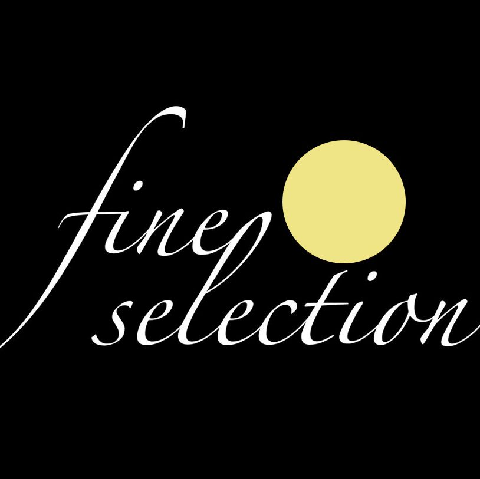
|
Arany Pöttyös könyvek:
Az arany pöttyös könyvek a felnőtt olvasóközönséget célozzák
meg, 18 éves kortól javasolt a kategóriában nézelődni. Bár az ide
besorolt köteteket nagykorúaknak ajánlja a Kiadó, közülük sokat már 16
éves kortól bátran kézbe lehet venni. Az Arany pöttyös könyvek által
feldolgozott témák igen széles skálán mozognak, és a legtöbb irodalmi
műfajt érintik. Találunk itt történelmi, romantikus, kaland, fantasy,
kortárs, és szépirodalmi alkotásokat, továbbá családregények is szép
számmal akadnak. Olykor előfordul, hogy egy-egy kötetben nemi aktust leíró sorok jelennek
meg, ám fontos hangsúlyozni, hogy nem ezek vannak a középpontban, így hivatalosan nem
tekinthetők erotikus regényeknek az ilyen jellegű Arany pöttyös könyvek.
Népszerű könyv a kategóriában a Téli kert, Társ a bajban, Két világ között, és az Outlander.
|
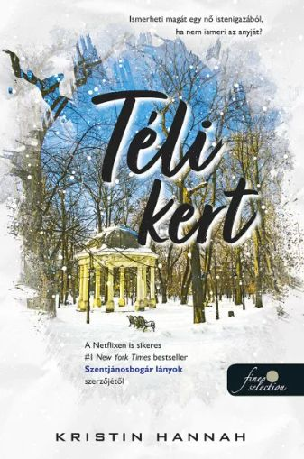
|
|
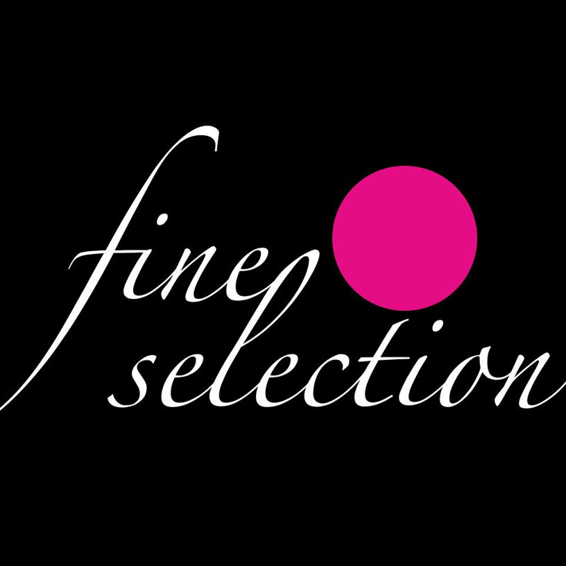
|
Bíbor pöttyös könyvek
A Bíbor pöttyös könyvek a 8 -14 éves korosztályt szólítják
meg, és leginkább a lányoknak készültek. Rózsaszín
pöttyösöknek is szokták becézni ezen kategória köteteit, ami
utal a ,,csajosabb” stílusra. Ezeket a pöttyös könyveket a
szülő bátran kezébe adhatja a tizenéves gyermekének,
ugyanis könnyed, csajos témákat dolgoznak fel, és nem
jelennek meg bennük erőszakos vagy erotikus jelenetek.
Olyan kiadványok tartoznak ide, mint Egy zizi naplója, Szerafina és a Fekete Köpeny, Az
utolsó ajándék, Lányok regénye vagy az Amélie zűrös élete.
|
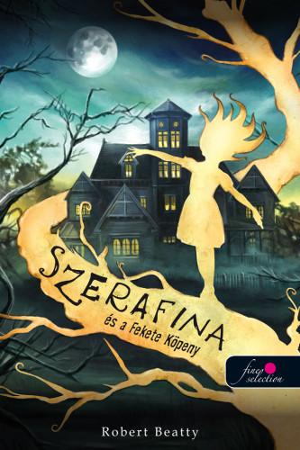
|
|
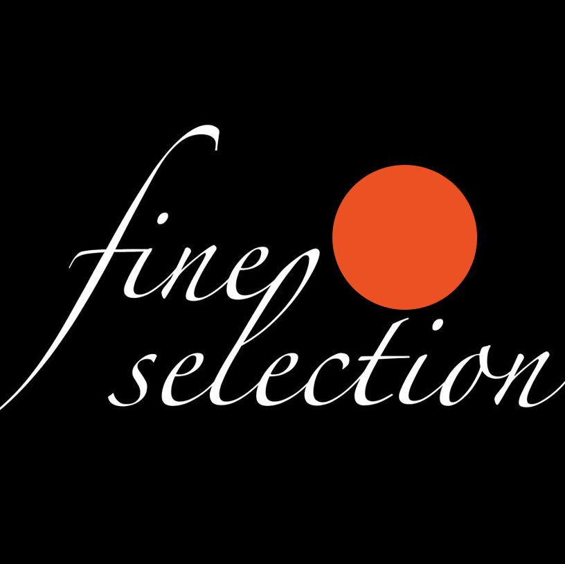
|
Narancs pöttyös könyvek
A narancs pöttyös könyvek az egészen fiataloknak, leginkább az
alsó tagozatos, már írni-olvasni tudó lányoknak kitalált pöttyös
sorozat. A Bíbor pöttyös könyveknél könnyedebb
olvasmányokat találni itt, melyek egyszerű stílusúak és
nyelvezetűek, érthetők és szórakoztatóak.
Ebbe a kategóriába olyan kötetek tartoznak, mint a Kinra Girls, Titok.com (Mona), Moka-
sorozat, Milly Merletti, és a Lola a színpadon.
|
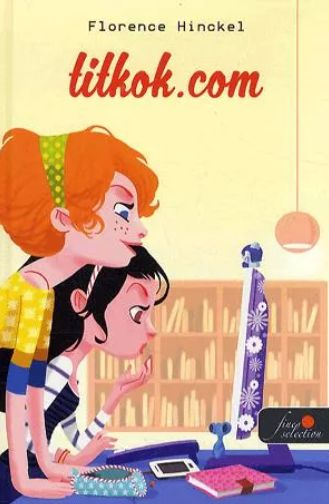
|
|
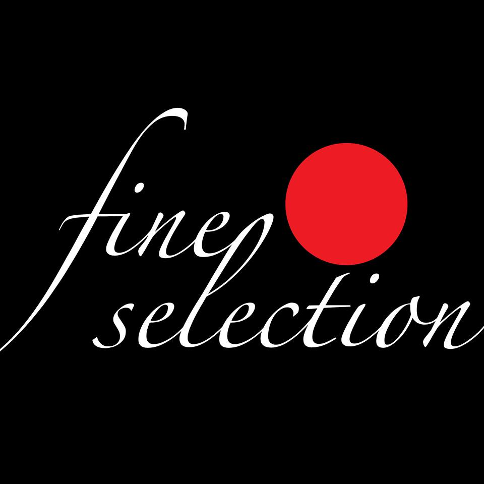
|
Vörös pöttyös könyvek
A Vörös pöttyös könyvek a Könyvmolyképző kiadó nagy
népszerűségnek örvendő, fiatal felnőtteknek, leginkább a
16 és 25 év közöttieknek szóló, úgynevezett Young Adult
(YA) könyvei. A Vörös pöttyös könyvek története sokszínű
és változatos, amiben a szerelem legtöbbször központi
szerepet játszik. A kötetek többsége valójában a
romantikus fantasy műfajába sorolható be, de akadnak
nem képzeletbeli szerelmes történetek is, amelyek biztosan leveszik a fiatal olvasókat a
lábukról. A romantikus szállal megfűszerett történetekben gyakran előfordul valamilyen
misztikus, varázslatos vonal is, illetve az sem ritka, hogy a képzeletbeli és a valós
események találkoznak egymással.
Népszerű Vörös pöttyös könyv az Éjféli nap, Árnyék és csont, Só és bánat háza, A róka árnya,
és az Az őrület hangjai.
|
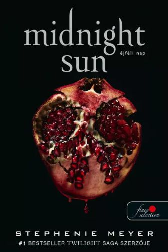
|
|
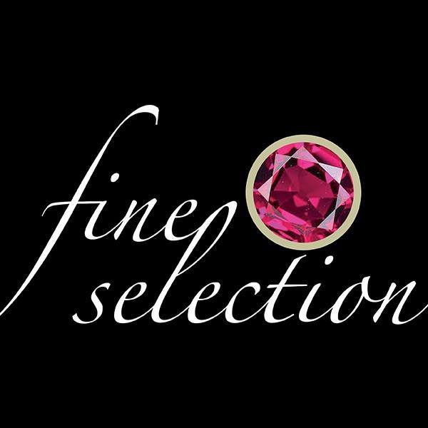
|
Rubin pöttyös könyvek
A Rubin pöttyös könyvek a felnőtt célközönségnek szólnak,
akik érdeklődnek a romantikus és határozottan erotikus
könyvek iránt. Ez a kategória úgynevezett new adult (NA),
tehát a 18+-os felnőtteknek szánt erotikus, szórakoztató
regényeket foglalja magába, melyek leginkább realista
regények, fantasy szál nélkül. A szerelem itt is központi szerepet kap a történetben, akárcsak
a Vörös pöttyös könyvek esetében, azonban itt már a szereplők nem állnak meg egy-egy
szenvedélyes csóknál.
Népszerű Rubin pöttyös könyv Az egyszerű vadon, az utóbbi időben nagy népszerűségnek
örvendő Colleen Hoover Elrontott életek című kötete, továbbá a Fekete szivárvány, a Talán
mégsem, a Várj velem, és az Édes szívtipró.
|
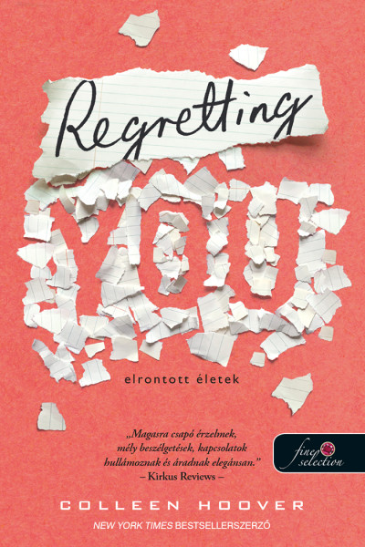
|
|
|
Zafír pöttyös könyvek
A Zafír pöttyös a kiadó legújabb sorozata, amely nagyon
hasonlít a Rubin pöttyösre. A különbség az, hogy míg az
előbbinél kifejezetten realista, azaz a valóságban és nem
képzeletbeli fantáziavilágban játszódó, gyakran erotikus
vonallal megfűszerezett szerelmi történetek kerülnek
bemutatásra, addig az utóbbinál határozottan a fantasy vonal
hangsúlyos. A Zafír pöttyös könyvek, egyszerűen fogalmazva, romantikus, erotikus fantasy
regények, amit a fiatal felnőtt női olvasók kedvelnek leginkább.
Ide olyan kötetek sorolhatók, mint a Sárkánymágusok, Vérből és hamuból, A villámlás
nyomában, Föld és vér háza, Gonosz kis játékok, Ezüst lángok udvara, és A kilencedik ház.
|
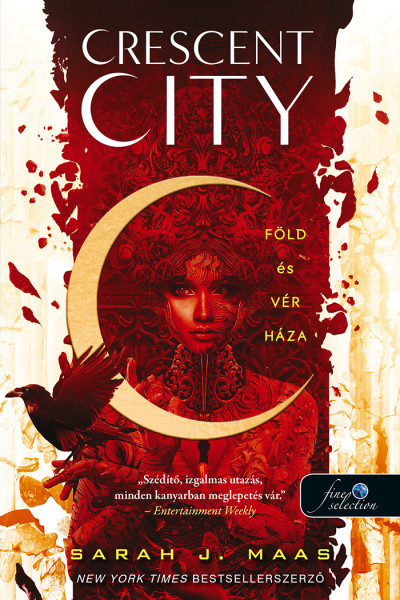
|
|
|
Kristály pöttyös könyvek
A Kristály pöttyös könyvek női pszichothriller regények, amiket
olyan felnőtt olvasóknak ajánlunk, akik imádják a borzongást, a
sötét titkokat, a különös, és az olyan rémisztő alakokat, akiktől
megfagy a vér az ereikben. A thriller olyan irodalmi műfaj, ami
sötét hangulatú, magával ragadó és feszültséggel teli történetekkel szórakoztatja és
borzasztja el az olvasót. A történetek által gyakran az emberi természet legsötétebb oldalába
kaphatunk betekintést olyan témák feldolgozása által, mint az erőszak, brutalitás,
pszichopaták szörnytettei, rablás, gyilkosság, és emberrablás. Ha te és éppen erre vágysz, a
kristály pöttyös könyveket jó szívvel ajánljuk számodra.
Ebbe a kategóriába tartozik például a Mintha gonoszok volnánk, A nyár gyermekei, Verity,
Míg a halál, és A testolvasó.
|
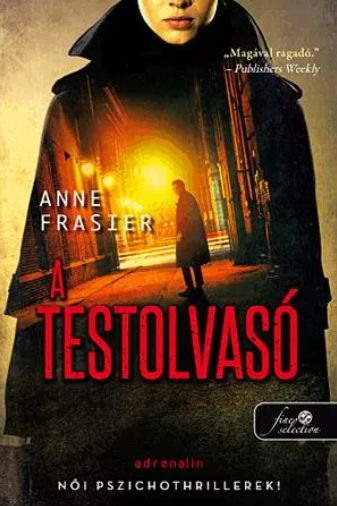
|
 Kosár
Kosár Rubin Pötty
Rubin Pötty Zafír Pötty
Zafír Pötty Kristály Pötty
Kristály Pötty